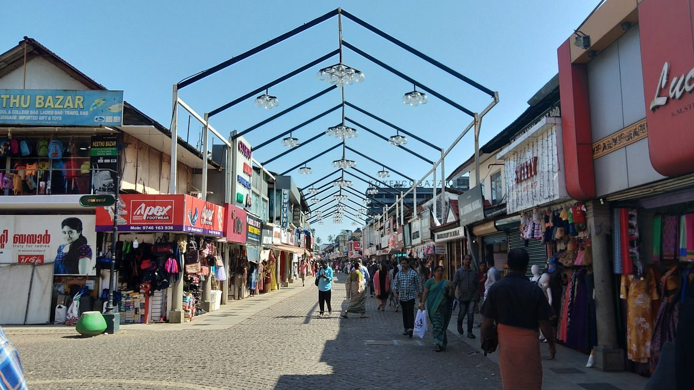
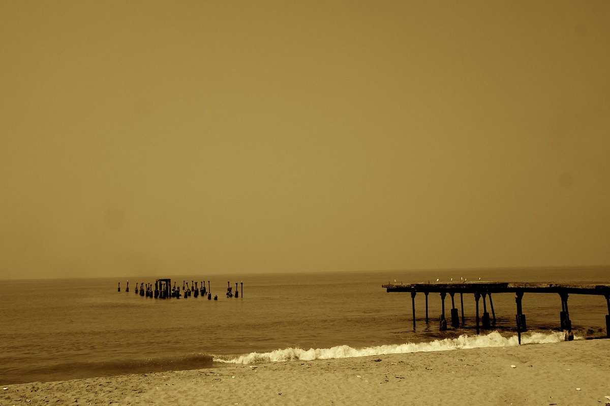
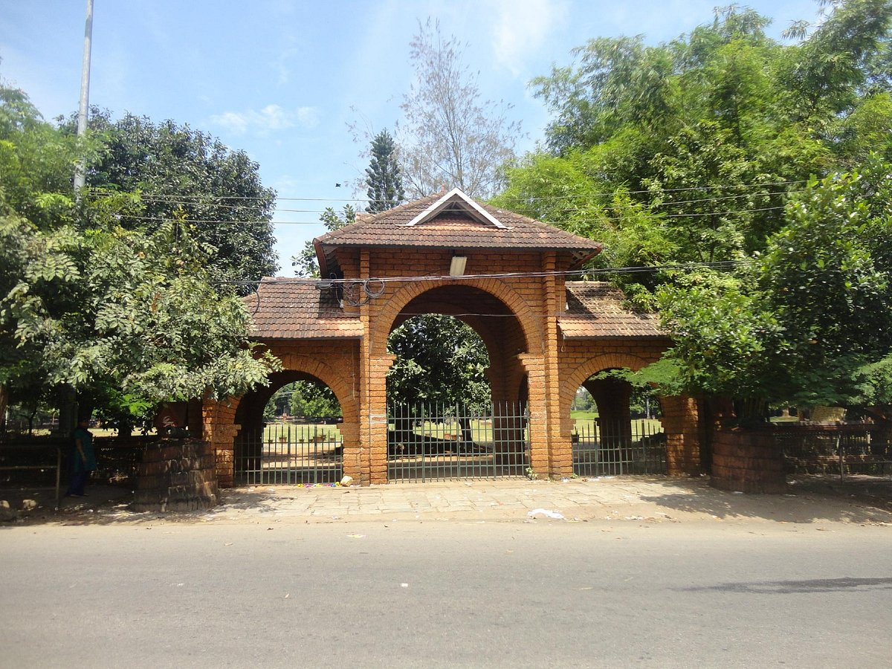

Kozhikode
Kerala is a home to a variety of landscapes and anyone who’s come across this God’s own country would surely agree. Calicut or much famed as Kozhikode, is one such beautiful city in Kerala that feel like every traveller’s dream. A pristine haven in nature, Kozhikode is filled with lush greenery, tranquil beaches, and historical forts. Also serving as the perfect weekend getaway for the locals and nearby travellers.
Places to visit :

S.M. Street

Kozhikode Beach

Beypore Beach

Mananchira Square